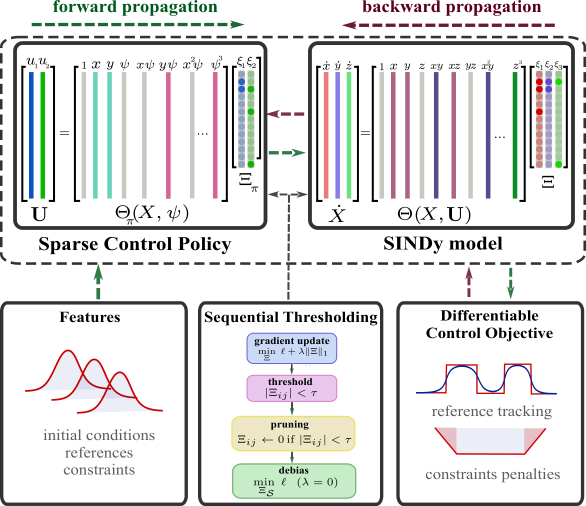
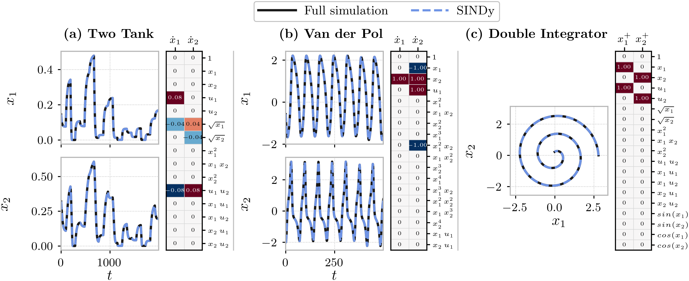
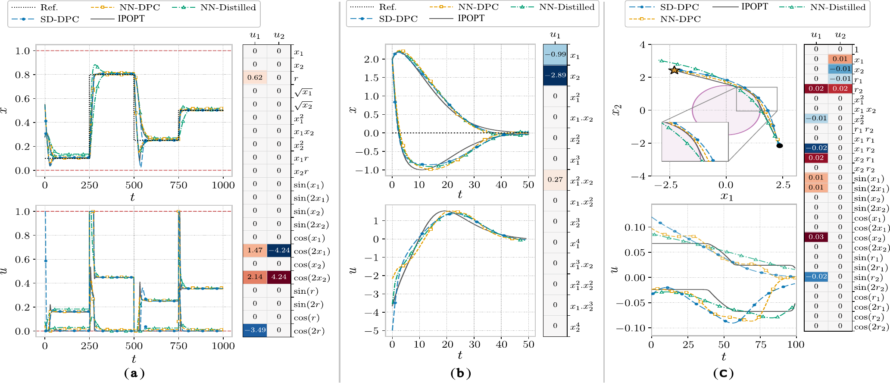
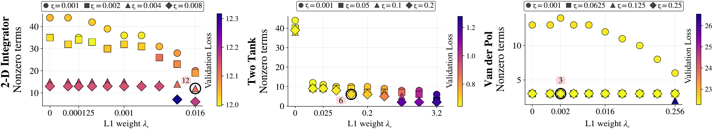

Sparse, interpretable policies, trained in closed loop
We present sparse dictionary differentiable predictive control (SD-DPC), a framework for learning sparse, interpretable feedback policies for nonlinear systems from data. A prediction model is first identified by rollout-based sparse identification of nonlinear dynamics (SINDy), building on gradient-based and multistep formulations. The policy is then parameterized as a sparse combination of dictionary functions and trained by differentiating a constrained finite-horizon predictive-control objective through this model, so that its terms are selected by closed-loop performance rather than by imitating a previously trained controller. The result is an explicit feedback law with only a handful of terms. Across three benchmark control problems, SD-DPC satisfies the constraints in all test scenarios, outperforms a policy distilled onto the same terms by up to an order of magnitude, and requires orders of magnitude less memory and online computation than an optimization benchmark, while admitting explicit sensitivity bounds.
Two sparse stages, one thresholded gradient procedure
The prediction model and the feedback law are both sparse expansions over explicit dictionaries, and both are sparsified by the same sequentially thresholded gradient descent. Nothing in the pipeline imitates a pretrained controller.

Sparse dynamics from rollout error
The dynamics are fit from multistep rollout error instead of state derivatives, so numerical differentiation never enters the objective. With a one-step horizon and an Euler step the formulation collapses back to standard ℓ1-SINDy.
Dictionary policy, trained through the model
The policy is a dictionary expansion projected onto the admissible inputs, so input bounds hold by construction and each channel keeps its own subset of terms.
A leaky projection surrogate
The forward pass evaluates the true saturated loop; the backward pass uses a banded, leaky derivative so coefficients feeding a saturated channel are neither silenced nor credited with sensitivity the plant does not have.
Pruning that provably stops
A pruned coefficient never returns, so the retained set changes at most \(pn\) times and the thresholding loop terminates within \(n_pM(pn+1)\) epochs — for any loss. A debiasing refit then drops the ℓ1 penalty and re-tunes only the surviving coefficients.
Lipschitz bounds from coefficients
\(L_\pi\) is read off the retained coefficients and the library slopes, and bounds how far pruning or model mismatch can move the closed-loop trajectory — no layer-norm products or SDP relaxations needed.
Case studies
Three benchmarks exercise different parts of the framework: constrained reference tracking, stabilization of an unstable equilibrium, and a nonlinear state constraint. In every case the policy is trained on the identified model \(F_\Xi\) and then evaluated on the true plant, so the reported results include model mismatch.
Constrained level tracking
A pump feeds an upper tank that drains by gravity into a lower one. The two states are the liquid levels; the inputs are the pump command and the valve split.
- Task: track time-varying level references
- Constraints: levels in \([0,1]\), inputs in \([0,1]^2\)
- Loss: tracking error plus hinge penalties on the level bounds
Suppressing a limit cycle
The forced oscillator converges to an attracting limit cycle around an unstable origin. One input, relative degree two; initial conditions are sampled on and off the cycle.
- Task: regulate the state to the unstable origin
- Constraints: \(|u|\le5\), \(|x_i|\le5\)
- Loss: state cost plus state- and input-increment penalties
Reaching past an obstacle
A planar integrator whose dynamics are linear and decoupled, so the entire difficulty lies in a nonlinear state constraint that excludes a disc from the state space.
- Task: reach a terminal setpoint whose direct path is blocked
- Constraints: bounded inputs, circle of radius 1.5 at the origin
- Loss: effort and increment costs, a hinge on \(h_{\mathrm{obs}}\), and a terminal term evaluating the policy at the target
Baselines and evaluation protocol
An optimization benchmark solved per scenario with exact model knowledge and the same costs — a performance reference, not a competitor.
A deep policy (two hidden layers, 32 ReLU units) trained by the same closed-loop objective on the same identified model: the standard DPC parameterization.
A sparse policy regressed onto NN-DPC's actions, restricted to the terms SD-DPC retained, so the two differ only in how the coefficients on a common support are obtained.
Constraints met, two orders of magnitude smaller
Every controller is evaluated on the true plant over 500 held-out scenarios. SD-DPC evaluates in 17 µs and stores under 0.1 kB across all three systems — versus 5 kB for the neural policy and 18–26 MiB per IPOPT solve.
Identified models

Closed-loop evaluation

| Method | Task loss [10−3] | Control effort | Time [µs] / memory | Violations [%] / depth |
|---|---|---|---|---|
| Two-tank | ||||
| IPOPT | 8.8×10−6 | — | 8444 / 26 MiB | 0.0 / — |
| NN-DPC | 0.144 ± 0.013 | — | 30 / 5.01 kB | 0.0 / — |
| SD-DPC | 0.012 ± 0.006 | — | 17 / 0.047 kB | 0.0 / — |
| NN-Distilled | 0.209 ± 0.039 | — | 17 / 0.047 kB | 0.0 / — |
| Van der Pol | ||||
| IPOPT | 4.6×10−24 | — | 301 / 19 MiB | 0.0 / — |
| NN-DPC | 41.0 ± 124.4 | — | 29 / 5.01 kB | 0.0 / — |
| SD-DPC | 49.9 ± 126.4 | — | 17 / 0.023 kB | 0.0 / — |
| NN-Distilled | 96.8 ± 183.8 | — | 17 / 0.023 kB | 0.0 / — |
| 2-D integrator | ||||
| IPOPT | 0.000 ± 0.000 | 12.00 ± 1.18 | 1841 / 18 MiB | 0.0 / — |
| NN-DPC | 0.298 ± 0.560 | 12.00 ± 1.16 | 28 / 5.01 kB | 0.0 / — |
| SD-DPC | 4.75 ± 4.79 | 12.07 ± 1.12 | 17 / 0.094 kB | 0.0 / — |
| NN-Distilled | 62.6 ± 58.0 | 12.07 ± 1.03 | 17 / 0.094 kB | 60.8 / 1.61 |
Mean ± standard deviation over 500 held-out test scenarios simulated on the true plant; IPOPT losses are numerically zero and given as means. Horizons are 1000, 50 and 100 steps; task loss is the MSE over the final 100 steps of each 250-step reference segment, the final 10 steps, and the terminal state, respectively. Control effort is \(\sum_t\|u_t\|_1\). Time is per control step; for IPOPT it is the solve time divided by \(N\). Memory is parameter storage for the learned policies and the resident memory added by each solve for IPOPT. Violations give the percentage of scenarios with any state-constraint violation and the maximum violation depth. NN-Distilled uses the terms retained by SD-DPC, fitted by unregularized least squares.
The learned policies
Each controller below is the complete feedback law, printed in full.
Six terms across the two channels. Tracking loss is about 12× lower than NN-DPC — a gap well beyond the scenario-to-scenario spread — so sparsity costs nothing in accuracy here. Distilling onto the same six terms leaves a steady offset and about 17× the error.
The pump command mixes a reference feedforward with feedback on both levels; the two nearly equal valve coefficients open the valve only when the upper tank is fuller than the lower one.
Three terms, with a loss comparable to the neural policy — and a closed loop simple enough to analyze by hand.
Because the model and the policy are finite expansions over analytic libraries, the unsaturated closed loop is available in closed form: the conditions \(\kappa_1<1\), \(\kappa_2<-\mu\), \(\kappa_3\le\mu\) hold for the learned coefficients, so the origin is globally asymptotically stable.
Twelve terms steer around the obstacle from every sampled initial condition, with cumulative control effort within 0.6% of the IPOPT optimum. The distilled policy on the same terms violates the obstacle in 60.8% of scenarios — which is the point of this case.
The imitation error is small on the states the teacher visits, where the regression data lie, but grows on the states the student visits. A near-optimal teacher clears the obstacle by only 0.06, so no margin is left to absorb it.
Training dynamics
Closed-loop states, the control signal, and the coefficient matrix during sparse policy learning on the Van der Pol oscillator. Pruned terms stay visible with their coefficients pinned at zero; by the end, three terms carry the whole controller.
The retained terms depend jointly on the ℓ1 weight \(\lambda_\pi\) and the threshold \(\tau_\pi\). We keep the sparsest policy whose validation performance is not degraded relative to the dense end of the sweep. For the Van der Pol oscillator the loss is flat across the sweep; for the two-tank system it degrades once \(\lambda_\pi\) is pushed past the selected point.

Certified sensitivity
Weighting each retained coefficient by the slope of its library function certifies \(L_\pi\le18.4\), \(16.0\) and \(0.32\) for the three systems, whereas the largest \(\|\partial_x\pi\|\) found by automatic differentiation on a dense grid is \(12.0\), \(9.4\) and \(0.19\) — the certificate is conservative by a factor of at most 1.7, and the pruning bound held at every prune.
Reproducing
git clone https://github.com/SOLARIS-JHU/SD-DPC.git && cd SD-DPC
python3.10 -m venv .venv && source .venv/bin/activate && pip install -e .
CASE=TwoTank # or VanDerPol, DoubleIntegrator
python scripts/$CASE/system_id.py # 1. sparse dynamics + debias refit
python scripts/$CASE/train_sd_dpc.py # 2. sparse dictionary policy
python scripts/$CASE/train_nn_dpc.py # 3. neural DPC baseline
python scripts/$CASE/evaluation.py # 4. evaluate on the true plantPaper configs, publication checkpoints and four tutorial notebooks per case are included, built on Neuromancer 1.5.3, PyTorch 2.6 and CasADi.
BibTeX
@article{garmroodi2026sd,
title = {SD-DPC: Sparse Dictionary Differentiable Predictive Control},
author = {Garmroodi, Ali Reza Daneshvar and Drgo{\v{n}}a, Jan},
journal = {arXiv preprint arXiv:2610.02466},
year = {2026}
}This research is supported by the U.S. DOE, Office of Science, ASCR program under the SciDAC Institute “LEADS: LEarning-Accelerated Domain Science”.